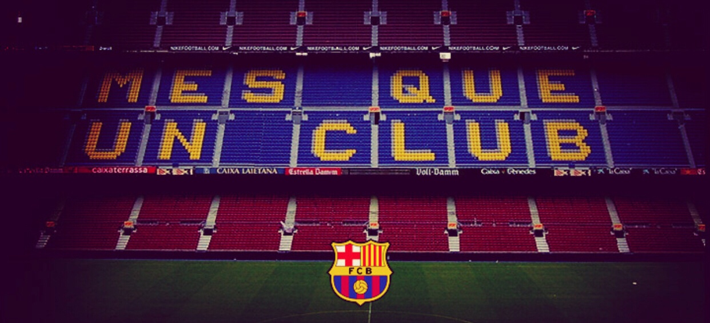
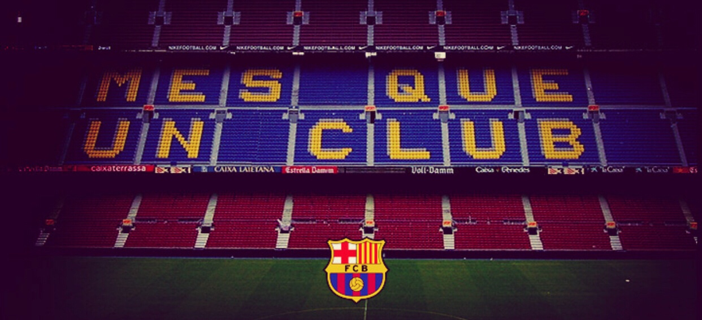

Una escola de vida
La Masia no només forma futbolistes, sinó persones. L'esforç, la humilitat, el respecte, el treball en equip i el compromís són els pilars fonamentals que s'inculquen des del primer dia.
MES QUE UN CLUB.
La Masia no només forma futbolistes, sinó persones. L'esforç, la humilitat, el respecte, el treball en equip i el compromís són els pilars fonamentals que s'inculquen des del primer dia.
MES QUE UN CLUB.